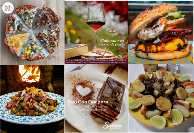
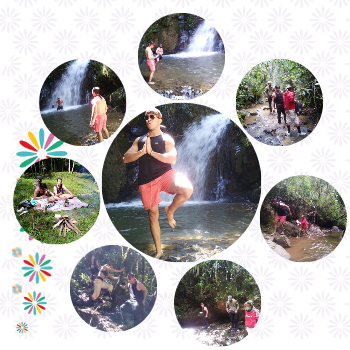
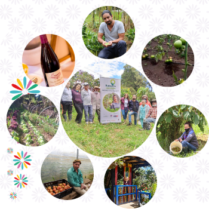

Sabor & Autenticidad
Te espera una experiencia única, llena de sabores auténticos, calor humano, servicios de alta calidad, ingredientes orgánicos, cocina artesanal y buena mesa.

Ruta Ecológica
Senderismo & Naturaleza

Una experiencia más allá de las flores
“Hay una ruta que nos espera, caminos que cuentan historias de siembras, de la magia que habita en la tierra, de cultivos que fueron abonados con paciencia, constancia y optimismo infinito”
